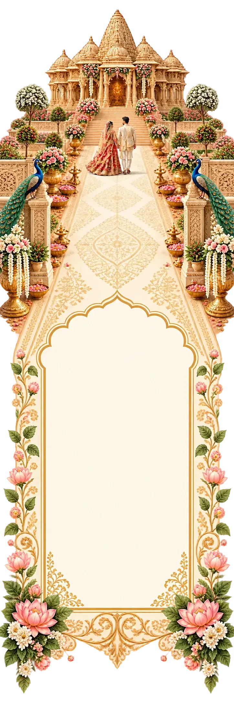
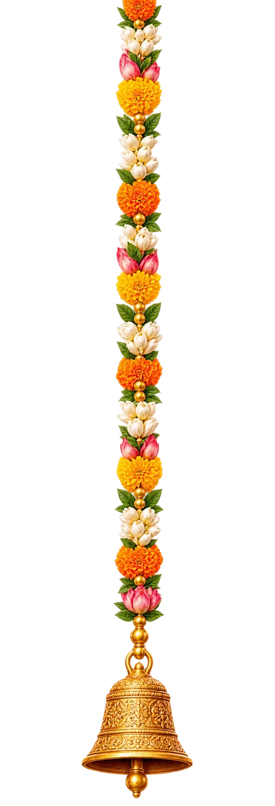
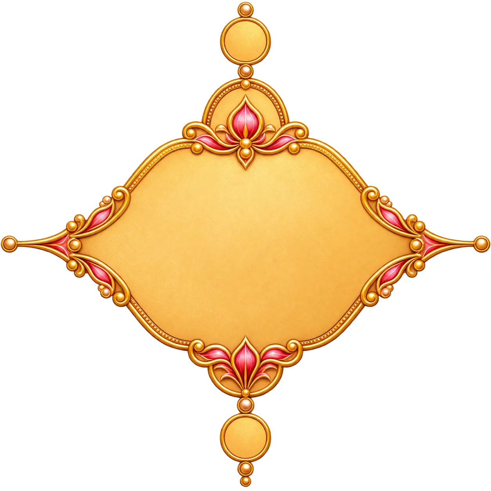
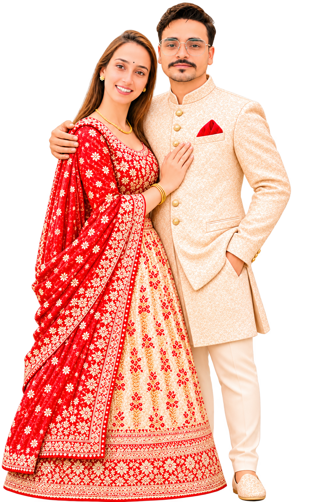
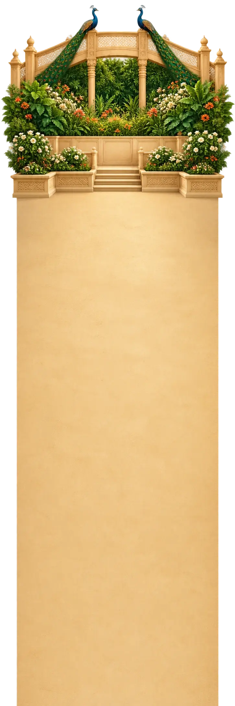
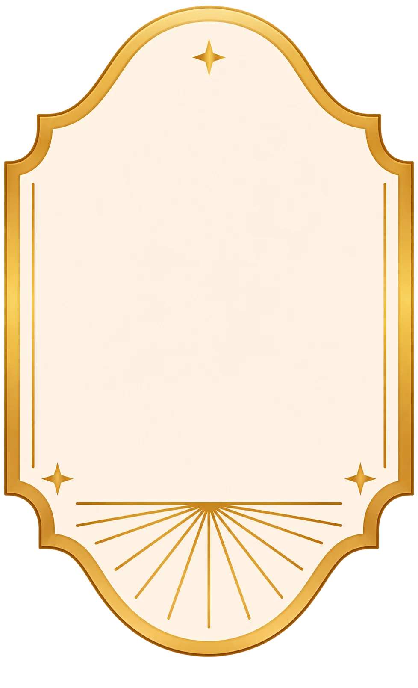
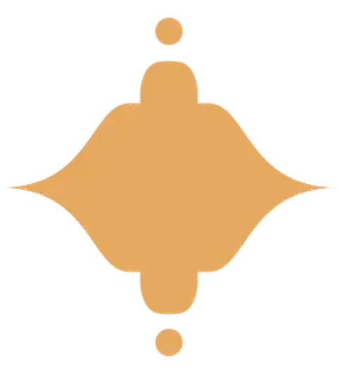

चि० जसवीर सिंहसंगआ० लता

॥ ॐ श्री गणेशाय नमः ॥
वक्रतुण्ड महाकाय सूर्यकोटि समप्रभः।
निर्विघ्नं कुरु मे देव सर्वकार्येषु सर्वदा ॥
परमपिता परमात्मा की असीम अनुकम्पा एवं कुलईष्ट व देवी-देवताओं के परोक्ष आशीर्वाद से
श्रीमती बुत देवी
(धर्मपत्नी स्व. श्री नेक राम)
अपने सुपुत्र
चि० जसवीर सिंह
(सुपुत्र श्रीमती तृप्ता देवी एवं श्री भगत राम)
संग
आ० लता
(सुपुत्री श्रीमती कमलेश एवं श्री तुलसी राम)
के शुभ विवाहोत्सव की पावन बेला पर आपको अपने निवास स्थान पर सपरिवार सादर आमंत्रित करते हैं। कृपया पधार कर नवयुगल को आशीर्वाद देकर अनुगृहीत करें।

शुभ विवाहोत्सव
मंगलवार, 1 दिसंबर से गुरुवार, 3 दिसंबर 2026
आपकी गरिमामयी उपस्थिति और आशीर्वाद हमारे लिए अनमोल होंगे।

सादर निमंत्रण

वैवाहिक कार्यक्रमवैवाहिक कार्यक्रम
मंगलवार, 1 दिसंबर से गुरुवार, 3 दिसंबर 2026

मंगलवार • 01 दिसंबर 2026मामा स्वागत
03.50 बजे सायंशान्ति पूजन
04.50 बजे सायंनिवास स्थानग्राम व डा. महलेरा, तह. कृष्णगढ़ (कुठाड़), जिला सोलन (हि.प्र.)

- मंगलवार • 01 दिसंबर 2026
सेहरा बन्दी
07.00 बजे सायंनिवास स्थानग्राम व डा. महलेरा, तह. कृष्णगढ़ (कुठाड़), जिला सोलन (हि.प्र.)
- बुधवार • 02 दिसंबर 2026
बारात प्रस्थान
06.00 बजे प्रातःवधु प्रवेश
05.00 बजे सायंनिवास स्थानग्राम व डा. महलेरा, तह. कृष्णगढ़ (कुठाड़), जिला सोलन (हि.प्र.) - वीरवार • 03 दिसंबर 2026
धाम
01.00 बजे दोपहरनिवास स्थानग्राम व डा. महलेरा, तह. कृष्णगढ़ (कुठाड़), जिला सोलन (हि.प्र.)
॥ शुभ विवाहोत्सव ॥
ईश्वर से नवयुगल के सुखद एवं मंगलमय जीवन की कामना करते हैं।
परिवार सहित आपका हार्दिक स्वागत है
आपकी उपस्थिति हमारे लिए सम्मान और हर्ष का विषय होगी। सपरिवार पधारें और नवयुगल को अपना स्नेह एवं आशीर्वाद दें।
श्रीमती बुत देवी
धर्मपत्नी स्व. श्री नेक राम
अपने परिवार सहित
चि० जसवीर सिंह
श्रीमती तृप्ता देवी एवं श्री भगत राम
आ० लता
श्रीमती कमलेश एवं श्री तुलसी राम
विनीत
समस्त परिवार एवं मित्रगण

शुभारंभ तक
मामा स्वागत • मंगलवार, 1 दिसंबर 2026 • 03.50 बजे सायं